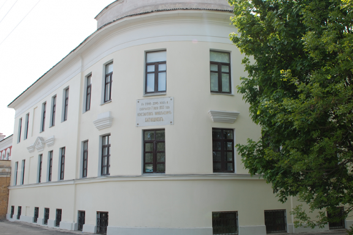

Биография Батюшкова Константина Николаевича
|  |
Батюшков Константин Николаевич (18[29].05.1787— 7[19].07.1855), русский поэт, родился в городе Вологда. Принадлежал к старинному дворянскому роду. Воспитывался в Санкт-Петербурге, в частных иностранных пансионах. Кроме французского языка, в совершенстве владел итальянским, позднее латинским языками. Служил на военной (был участником трех войн, в т. ч. заграничного похода 1814) и мелкой чиновничьей службе, позднее — в русской дипломатической миссии в Италии. В 1822 заболел издавна подкрадывавшейся к нему наследственной душевной болезнью. С 1802 года поселился в доме писателя М. Н. Муравьева, своего родственника; тогда же начал писать стихи. Вступил в члены Вольного общества любителей словесности, наук и художеств. Стихотворной сатирой «Видение на берегах Леты» (1809), получившей широкое распространение в списках, Батюшков принял активное участие в полемике с «Беседой любителей русского слова».
В начале 1807 года Батюшков, записался в народное ополчение и отправился в Прусский поход (в качестве сотенного начальника милиционного батальона). 29 мая 1807 года в сражении под Гейльсбергом он был тяжело ранен (пуля задела спинной мозг, что стало причиной последующих физических страданий). Батюшков, однако, остался в армии и в 1808-1809 годах участвовал в войне со Швецией; лишь после полугодовой жизни на зимних квартирах в Финляндии он вышел в отставку. С этого времени формируется своеобразный жизненный облик Батюшкова - "странствователя", "первого онегинского типа русской литературы" (Д. Д. Благой). "Онегинство" Батюшкова проявляется как внутренне - в постоянной душевной неуспокоенности, так и внешне -- в острых приступах "хандры", "охоты к перемене мест". Батюшков почти не жил на одном месте более полугода. С 1808 года (после вторичной женитьбы отца и раздела имения) "единственным верным приютом" для Батюшкова становится имение матери в с. Хантоново Череповского уезда Новгородской губернии (ныне Череповецкий р-н Вологодской области). Однако в деревне Батюшков тяготился одиночеством, стремился к друзьям, а попадая в столицы, рвался к деревенскому уединению.
Во время Отечественной войны Батюшков, не ушедший в действующую армию (из-за болезни и из-за необходимости вывозить из Москвы вдову М. Н. Муравьева с детьми), испытал на себе "все ужасы войны" (разрушение "прекраснейшей из столиц", "переселение целых губерний", "нищету, отчаяние, пожары, голод")
Батюшковым впервые было употреблено получившее позднее широкое употребление слово «славянофил». Батюшков вступил в противостоявший «Беседе» литературный кружок «Арзамас», куда входили представители новых литературных течений — от В. А. Жуковского и Д. В. Давыдова до юного Пушкина, могучее дарование которого Батюшков сразу высоко оценил. Сблизился с кружком А. Н. Оленина, где процветал культ античности. Произведения Батюшкова, печатавшиеся в журналах, в 1817 году вышли отдельным изданием — «Опыты в стихах и прозе» (в 2-х частях).
Батюшков стал главой так называемой «легкой поэзии», восходящей к традиции анакреонтики XVIII в., наиболее выдающимися представителями которой были Г.Р. Державин и В.В. Капнист («образец в слоге», как назвал его Батюшков). Воспевание радостей земной жизни — дружбы, любви — сочеталось в интимных дружеских посланиях Батюшкова с утверждением внутренней свободы поэта, независимости его от «рабства и цепей» феодально-абсолютистского общественного строя, чьим пасынком он остро себя ощущал. Программным произведением этого рода явилось послание «Мои Пенаты» (1811—12, опубл. 1814); по словам Пушкина, оно «…дышит каким-то упоеньем роскоши, юности и наслаждения — слог так и трепещет, так и льется — гармония очаровательна». Образцом «легкой поэзии» является стихотворение «Вакханка» (опубл. 1817).
Патриотическое воодушевление, охватившее Батюшкова в связи с войной 1812, вывело его за пределы «камерной» лирики (послание «К Дашкову», 1813, историческая элегия «Переход через Рейн», 1814, и др.). Под влиянием тягостных впечатлений войны, разрушения Москвы и личных потрясений Батюшков переживает духовный кризис. Его поэзия все сильнее окрашивается в печальные тона (элегия «Разлука», 1812—13; «Тень друга», 1814; «Пробуждение», 1815; «К другу», 1815 и др.), доходя порой до крайнего пессимизма («Изречение Мельхиседека», 1821).
К числу лучших элегий Батюшкова принадлежат «Мой гений» (1815) и «Таврида» (1817). Существенным вкладом в развитие русской поэзии явился глубокий лиризм Батюшкова, сочетавшийся с небывалой до тех пор художественностью формы. Развивая традицию Державина, он требовал от поэта: «Живи, как пишешь, и пиши, как живешь». Многие стихи представляют собой как бы страницы поэтизированной автобиографии Батюшкова, в личности которого уже сквозят черты разочарованного, рано состарившегося, скучающего «героя времени», нашедшие позднее художественное выражение в образах Онегина и Печорина.
В отношении поэтического мастерства образцами для Батюшкова были произведения античных и итальянских поэтов. Он переводил элегии Тибулла, стихи Т. Тассо, Э. Парни и др. Одно из наиболее прославленных сочинений Батюшкова элегия «Умирающий Тасс» (1817) посвящена трагической судьбе поэта — тема, настойчиво привлекавшая внимание Батюшкова.
Жанры «легкой поэзии», по мнению Батюшкова, требуют «возможного совершенства, чистоты выражения, стройности в слоге, гибкости, плавности» и потому являются лучшим средством для «образования» и «усовершенствования» стихотворного языка («Речь о влиянии легкой поэзии на язык», 1816). Писал Батюшков и в прозе, полагая, что это также является важной школой для поэта (преимущественно очерки, статьи по вопросам литературы и искусства; наиболее значительны из них «Вечер у Кантемира», «Прогулка в Академию художеств»).
Стих Батюшкова достиг высокого художественного совершенства. Современники восхищались его «пластикой», «скульптурностью», Пушкин — «итальянской» певучестью («Звуки италианские! Что за чудотворец этот Батюшков»). Своими переводами «Из греческой антологии» (1817—18) и «Подражаниями древним» (1821) Батюшков подготовил антологические стихи Пушкина. Батюшков тяготился узостью тем и мотивов, однообразием жанров своей поэзии. Он задумывал ряд монументальных произведений, исполненных содержания «полезного обществу, достойного себя и народа», увлекался творчеством Байрона (перевод на русский язык из «Странствований Чайльд-Гарольда»).
19 ноября 1819 года Батюшков выехал из России к новому месту службы: в Италию, чиновником при неаполитанской миссии. Там он общается С русскими художниками (С. Ф. Щедриным, О. А. Кипренским, Ф. М. Матвеевым и другими), занимается переводами (в том числе из "Странствований Чайльд-Гарольда" Байрона), описанием "неаполитанских древностей" и т.д. Однако наследственная склонность к душевному заболеванию, служебные неприятности и внутреннее чувство "раздвоенности" привели к тяжелым последствиям: в 1821 году поэт начал ощущать признаки мании преследования, ставшей неизлечимой психической болезнью. Несмотря на заботу родных и друзей (Муравьевых, Жуковского, Вяземского и других), на лечение в лучших клиниках, вернуть Батюшкова к нормальной жизни не удалось. А.С. Пушкин возражая против нападок критики на Батюшкова сказал: "Что касается до Батюшкова, уважим в нем несчастия и не созревшие надежды. Прощай, поэт".
Последние годы Батюшков жил у родственников в Вологде; умер от тифозной горячки; похоронен в Спасо-Прилуцком монастыре вблизи города.
Поэт с горечью замечал: «Что говорить о стихах моих! Я похож на человека, который не дошел до цели своей, а нес он на голове красивый сосуд, чем-то наполненный. Сосуд сорвался с головы, упал и разбился вдребезги, поди узнай теперь, что в нем было». Батюшков сыграл значительную роль в развитии русской поэзии: наряду с Жуковским он явился непосредственным предшественником и литературным учителем Пушкина, осуществившего многое из того, что было начато Батюшковым.